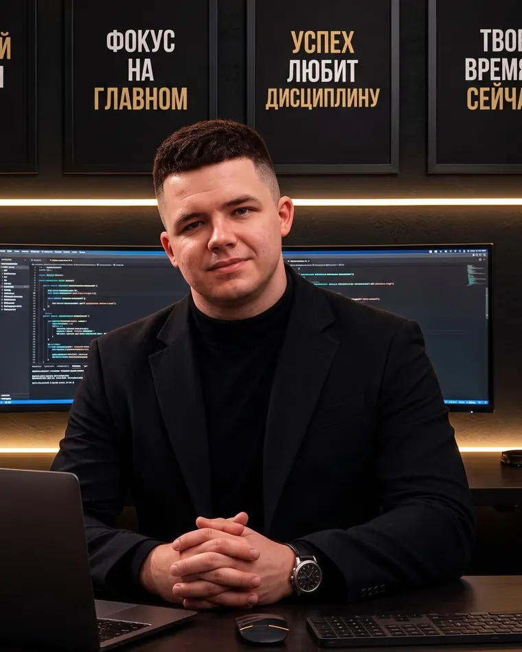

Разбор задачи
Изучаю бизнес, действующие инструменты, ограничения и желаемый результат.
Проектирую и разрабатываю цифровые системы: от отдельной автоматизации до собственной платформы с искусственным интеллектом, интеграциями и удобными интерфейсами.
Выберите товары и количество. Менеджер проверит условия поставки, затем подтвердит заказ.
▤ Регламент заказов · примерВыбираю технологию под бизнес-задачу, а не под заранее заданный стек.
ИИ, который работает с вашими данными и выполняет конкретные действия.
ПодробнееСокращение ручных операций и передача данных между системами.
ПодробнееОт отдельного инструмента до собственной платформы и серверной архитектуры.
ПодробнееСайты, которые поддерживают реальные клиентские сценарии.
ПодробнееПрямые продажи, B2B-торговля и индивидуальные конфигураторы.
ПодробнееБоты и полноценные приложения внутри мессенджера.
ПодробнееЕдиная инфраструктура вместо разрозненных инструментов.
ПодробнееНе нужно заказывать сайт, ИИ, CRM-интеграцию и автоматизацию у разных исполнителей.
Иллюстрация возможной архитектуры; состав системы зависит от проекта.
Не готовые продукты с неизвестной совместимостью, а понятные сценарии индивидуальной разработки.
Гость выбирает блюда, оплачивает и получает статус заказа без перехода на агрегатор.
Сценарий Компьютерные клубыИгрок выбирает еду и напитки, указывает место, оплачивает или отправляет заказ администратору.
Сценарий Компьютерные клубыИгрок выбирает зал, время и место, оплачивает и получает подтверждение.
Сценарий ПроизводствоПокупатель выбирает материал, размеры и опции, получает предварительный расчёт.
Сценарий Производство и оптКонтрагент видит индивидуальные цены и оформляет поставку в личном кабинете.
Сценарий Отделы продажПосетитель задаёт вопросы, получает ответы по данным компании и при необходимости передаётся менеджеру.
СценарийПолный цикл разработки, прямое общение и прозрачные условия до начала каждого этапа.
Изучаю бизнес, действующие инструменты, ограничения и желаемый результат.
Определяю сценарии, функциональность, подход и при необходимости готовлю прототип.
Согласуем состав работ, стоимость, сроки, оплату, инфраструктуру и сопровождение.
Проектирование интерфейсов, программирование и интеграции по согласованным этапам.
Проверяю сценарии, данные, интеграции, адаптивность и развёртываю продукт.
Документация, помощь с настройкой, поддержка и новые модули по договорённости.
Если готовое решение закрывает задачу, нет необходимости создавать его заново. Если нужна собственная логика, проектирую её под ваш бизнес.
Форматы и стоимостьАдаптация проверенных технологий для стандартных задач.
Собственные интерфейсы и бизнес-логика поверх подходящей инфраструктуры.
Нестандартная серверная архитектура, собственные модули и интеграции.
Первая рабочая версия, проверка востребованности и постепенное расширение.
Нет. Достаточно описать бизнес, существующий процесс и желаемый результат. Требования формируются после обсуждения.
Возможно оформление по договору с ИП, компаниями и другими заказчиками с учётом правового и налогового статуса. Условия согласовываются индивидуально.
Да, можно согласовать техническое сопровождение, исправления, новые функции и развитие интеграций.

Обсуждаем бизнес-задачу напрямую, без цепочки посредников. Проектирование, технические решения, согласование функций и развитие проекта — в рамках одной профессиональной коммуникации.